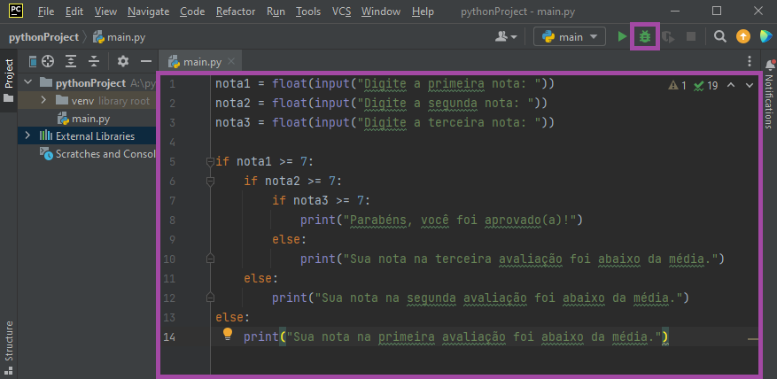
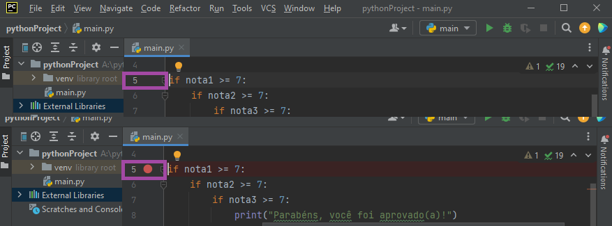
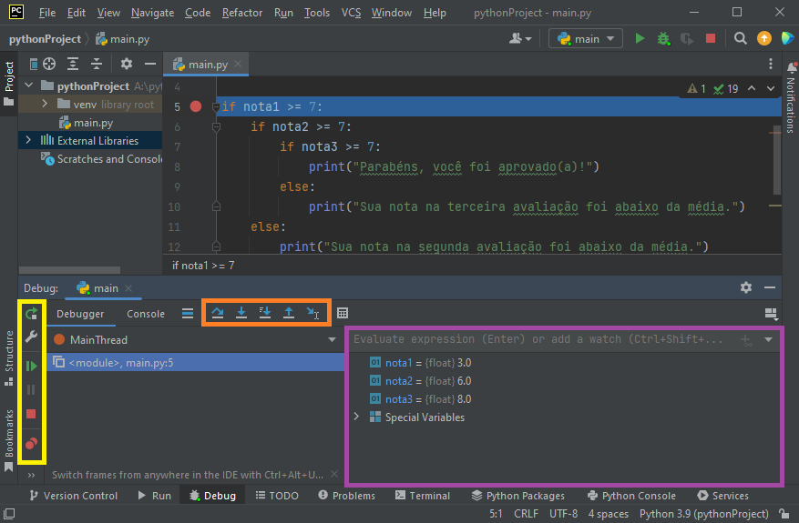

4.1 O que você saberá se você ler todo este capítulo?
Estruturas de Seleção: Como usar if, elif e else para tomar decisões no seu código
Lógica Condicional: Como combinar condições com operadores and, or e not
Estruturas Aninhadas: Como colocar if dentro de if (e quando evitar isso!)
Match/Case: Uma alternativa moderna ao if/elif/else (Python 3.10+)
Debugging: Como usar o debugger do PyCharm para encontrar e corrigir erros
Teste de Mesa: Como simular a execução do código no papel
Boas Práticas: Quando usar cada tipo de estrutura e como manter o código legível
🎓 Vindo do Capítulo 3? Perfeito! Você já domina variáveis e entrada/saída. Agora é hora de dar vida ao seu código! Este capítulo ensina como fazer o programa tomar decisões baseadas em condições.
🎯 Objetivo deste capítulo: Ao final, você será capaz de criar programas que tomam decisões inteligentes, como um sistema de aprovação, calculadora de descontos ou validador de dados.
⚠️ Importante: Este capítulo é fundamental! Sem estruturas de seleção, seus programas seriam apenas calculadoras simples. Aqui você aprende a dar “inteligência” ao código!
Primeiro bug identificado na história. A imagem mostra um inseto grudado com uma fita adesiva em uma folha de caderno de 1947.
4.2 Parabéns!
Oi de novo! Parabéns por ter aprendido o básico do Python! É incrível como você já conseguiu dominar variáveis, operadores e entrada/saída em tão pouco tempo. Saber programar (isso é diferente de seguir tutoriais, tá?) é uma habilidade super valiosa e pode ser útil em várias áreas da vida.
💡 Dica importante: Não desanime se encontrar desafios. Programação é como aprender a andar de bicicleta - no início parece difícil, mas com prática fica natural!
4.3 Do Lego ao Código Inteligente
Veja só: até agora você aprendeu a usar “blocos básicos” do Python (variáveis, operadores, input(), print()). Imagine como construir com Lego:
Capítulos 1-3: Você aprendeu sobre os blocos básicos (peças retangulares, quadradas, etc.) Capítulo 4 (agora): Você vai aprender sobre as engrenagens e motores que dão vida ao seu Lego!
🎯 Analogia perfeita: Assim como um robô de Lego precisa de engrenagens para tomar decisões (virar à esquerda, parar, acelerar), seus programas Python precisam de estruturas de seleção para tomar decisões inteligentes.
4.4 O que você vai aprender agora
Com as estruturas de seleção (if, elif, else), você poderá criar programas que:
✅ Tomam decisões: “Se o usuário tem 18 anos, pode votar”
✅ Aplicam regras: “Se o preço for acima de R$ 100, dar 10% de desconto”
✅ Validam dados: “Se a senha estiver correta, liberar acesso”
✅ Respondem inteligentemente: “Se a nota for 7+, aprovado; senão, reprovado”
4.5 Analogia da Receita de Bolo
Lembra das analogias de receita? Agora imagine uma receita inteligente:
Se você tem açúcar e cenoura → faça bolo de cenoura
Senão, se você tem cacau e açúcar → faça bolo de chocolate
Senão → faça um bolo simples de fubá
🚀 Pronto para começar? Vamos transformar seus programas de “calculadoras simples” em “assistentes inteligentes”!
Imagem de um homem olhando para geladeiras cheias de bebidas em um supermercado.
4.6 Algoritmos Sequenciais vs. Algoritmos de Seleção
4.6.1 O que você já sabe: Algoritmos Sequenciais
Até agora, todos os seus programas seguiam uma sequência linear de instruções:
# Exemplo de algoritmo sequencial (Capítulos 1-3)nome =input("Digite seu nome: ")idade =int(input("Digite sua idade: "))print(f"Olá {nome}, você tem {idade} anos!")
🎯 Característica: Sempre executa todas as linhas, na ordem exata, sem pular nada.
Analogia: É como uma receita de bolo simples:
Misture farinha
Adicione açúcar
Adicione ovos
Leve ao forno
Resultado: Sempre o mesmo bolo, sempre da mesma forma!
4.6.2 O que você vai aprender: Algoritmos de Seleção
Agora seus programas podem tomar decisões e escolher caminhos diferentes:
# Exemplo de algoritmo de seleção (Capítulo 4)idade =int(input("Digite sua idade: "))if idade >=18:print("Você pode votar!")else:print("Você ainda não pode votar.")
🎯 Característica: Executa diferentes linhas dependendo de condições.
Analogia: É como um GPS inteligente:
Se há trânsito → pegue rota alternativa
Senão → pegue rota normal
Resultado: Caminhos diferentes para situações diferentes!
4.6.3 Diferença Fundamental
Algoritmo Sequencial
Algoritmo de Seleção
Sempre executa tudo
Executa conforme condição
Caminho único
Múltiplos caminhos
“Calculadora”
“Assistente inteligente”
💡 Resumo: Você saiu de criar “calculadoras” para criar “assistentes que pensam”!
4.6.4 Exemplos da Vida Real
Semáforo Inteligente:
Se há muito trânsito → fica verde mais tempo
Senão → tempo normal
Loja Online:
Se cliente é VIP → frete grátis
Senão → frete normal
Sistema de Login:
Se senha correta → libera acesso
Senão → nega acesso
🚀 Pronto para ver como funciona na prática? Vamos aos exemplos!
4.6.5 Exemplo 1: Sistema de Login
Imagine que você está criando um sistema de login para um app. O usuário digita nome e senha, e o sistema decide se libera ou não o acesso.
🎯 Lógica: Se a senha estiver correta → libera acesso. Senão → nada acontece.
InícioTexto: nome_usuario, senha_usuarioEscreva("Digite o nome do usuário:")Leia(nome_usuario)Escreva("Digite a senha:")Leia(senha_usuario)Se a senha_usuario é válida para o nome_usuario, entãoLiberar acesso ao sistemaFim SeFim
4.6.5.1 Anatomia da Estrutura de Seleção
A estrutura de seleção (linhas 9-11) tem 3 partes essenciais:
🎯 A condição:Se a senha_usuario é válida para o nome_usuario, então
⚡ A ação:Liberar acesso ao sistema (linha 10)
🏁 O fim:Fim Se (linha 11)
💡 Dica: A indentação (espaçamento) na linha 10 mostra que essa ação está “dentro” da condição!
4.6.5.2 Como funciona na prática
Cenário 1: Senha correta ✅
Linha 9: Condição é verdadeira
Linha 10: Executa “Liberar acesso ao sistema”
Resultado: Usuário entra no sistema
Cenário 2: Senha incorreta ❌
Linha 9: Condição é falsa
Linha 10: Pula “Liberar acesso ao sistema”
Resultado: Usuário fica na tela de login
🎯 Resumo: O programa “decide” se executa ou pula a linha 10 baseado na condição!
4.6.6 Exemplo 2: Viagem Inteligente para a Universidade
Agora vamos para um exemplo mais complexo: você quer ir para a universidade, mas precisa ser inteligente sobre o combustível!
🎯 Problema: Não dá para dirigir com tanque vazio, né? Mas também não dá para ir ao posto sem dinheiro!
4.6.6.1 Pseudocódigo da Viagem Inteligente
InícioPegue as chaves do carro.Ande até o carro.Desbloqueie o carro.Entre no carro, se sentando no banco do motorista.Verifique o trânsito antes de sair de casa.Escolha o melhor caminho.Verifique se há combustível suficiente no tanque do carro para ir até a Universidade.Ligue o carro.Respeite as leis de trânsito e limite de velocidade durante todo o trajeto.Se o tanque estiver abaixo de 1/4 E se tiver dinheiro o suficiente para pagar pelo combustível entãoDirija até o posto de combustível.Pare em um posto de combustível no meio do caminho e abasteça.Pague pelo combustível.Saia do posto.Fim SeDirija até a Universidade.Estacione o carro em um local apropriado e seguro.Desligue o motor e retire a chave.Saia do carro.Fim
4.6.6.2 Estrutura de Seleção com Múltiplas Condições
A linha 11 tem uma condição composta:
tanque estiver abaixo de 1/4Etiver dinheiro suficiente
Ambas as condições precisam ser verdadeiras para executar as linhas 12-15
4.6.6.3 Cenários Possíveis
Cenário 1: Tanque cheio (acima de 1/4) ✅
Condição: Falsa (tanque não está abaixo de 1/4)
Ação: Pula linhas 12-15
Resultado: Vai direto para a universidade
Cenário 2: Tanque baixo, sem dinheiro ❌
Condição: Falsa (tem tanque baixo, mas não tem dinheiro)
Ação: Pula linhas 12-15
Resultado: Vai direto para a universidade (e reza para chegar!)
Cenário 3: Tanque baixo, com dinheiro ✅
Condição: Verdadeira (tanque baixo E tem dinheiro)
Ação: Executa linhas 12-15
Resultado: Para no posto, abastece, depois vai para a universidade
4.6.6.4 Operadores Lógicos em Ação
Operador
Significado
Exemplo
E (and)
Ambas condições devem ser verdadeiras
Tanque baixo E tem dinheiro
OU (or)
Pelo menos uma condição deve ser verdadeira
Tanque baixo OU tem dinheiro
NÃO (not)
Inverte o resultado da condição
NÃO tem dinheiro
💡 Dica: O operador E é mais restritivo (mais difícil de satisfazer), o OU é mais permissivo (mais fácil de satisfazer).
4.6.7 Exemplo 3: Sistema de Aprovação de Crédito
Agora vamos para um exemplo mais realista: um banco que precisa decidir se aprova ou nega um empréstimo!
🎯 Lógica: Se o cliente pode pagar → aprova. Senão → nega.
4.6.7.1 Versão Simples: Apenas if e else
InícioReal: credito_desejado, renda_mensalEscreva("Digite o valor do crédito desejado: ")Leia(credito_desejado)Escreva("Digite a renda mensal do cliente: ")Leia(renda_mensal)Se credito_desejado < renda_mensal entãoEscreva("Crédito aprovado!")SenãoEscreva("Crédito negado.")Fim SeFim
4.6.7.2 Introduzindo o else (senão)
A linha 12 apresenta algo novo: o else (senão)!
💡 Função: Define um caminho alternativo quando a condição do if é falsa.
4.6.7.3 Como funciona na prática
Cenário 1: Crédito menor que renda ✅
Linha 10: Condição verdadeira (pode pagar)
Linha 11: Executa “Crédito aprovado!”
Linhas 12-13: Pula (não precisa do else)
Cenário 2: Crédito maior que renda ❌
Linha 10: Condição falsa (não pode pagar)
Linha 11: Pula “Crédito aprovado!”
Linhas 12-13: Executa “Crédito negado.”
4.6.7.4 Versão Avançada: if, elif e else
Agora vamos adicionar uma situação intermediária:
InícioReal: credito_desejado, renda_mensalEscreva("Digite o valor do crédito desejado: ")Leia(credito_desejado)Escreva("Digite a renda mensal do cliente: ")Leia(renda_mensal)Se credito_desejado < renda_mensal entãoEscreva("Crédito aprovado!")Senão-se credito_desejado == renda_mensal entãoEscreva("Crédito aprovado, mas com ressalvas.")SenãoEscreva("Crédito negado.")Fim SeFim
4.6.7.5 Introduzindo o elif (senão-se)
A linha 12 apresenta o elif (senão-se):
💡 Função: Testa uma condição alternativa apenas se a condição anterior foi falsa.
4.6.7.6 Cenários com elif
Cenário 1: Crédito menor que renda ✅
Linha 10: Verdadeira → Executa linha 11
Linhas 12-15: Pula todas (não precisa testar mais)
Cenário 2: Crédito igual à renda ⚠️
Linha 10: Falsa → Testa linha 12
Linha 12: Verdadeira → Executa linha 13
Linhas 14-15: Pula (não precisa do else)
Cenário 3: Crédito maior que renda ❌
Linha 10: Falsa → Testa linha 12
Linha 12: Falsa → Executa linha 15 (else)
🎯 Resumo: O programa testa as condições na ordem e executa apenas a primeira que for verdadeira!
4.6.8 Resumo: Estruturas de Seleção em Pseudocódigo
🎯 Calma! Sei que pode parecer confuso no início, mas você já entendeu o conceito! Vamos organizar o que aprendemos:
4.7 As 3 Estruturas Básicas
Estrutura
Função
Exemplo
se
Testa uma condição
Se tem dinheiro → compra
senão-se
Testa condição alternativa
Senão-se tem cartão → compra no crédito
senão
Ação padrão quando tudo falha
Senão → não compra nada
4.8 Analogia da Loja de Doces
Imagine que você tem R$ 100,00 e está numa loja de doces:
Se preço do chiclete <= R$ 20,00 entãoCompre o chicleteSenão-se preço do pirulito <= R$ 20,00 entãoCompre o pirulitoSenão-se preço da paçoca <= R$ 20,00 entãoCompre a paçocaSenãoVá embora da loja (tá tudo caro!)Fim Se
4.9 Regras Importantes
Ordem importa: Testa condições na sequência
Primeiro vence: Executa apenas a primeira condição verdadeira
Flexibilidade: Pode usar apenas if, ou if + else, ou if + elif + else
Múltiplos elif: Pode ter vários elif em sequência
4.10 Próximo Passo
Agora que você entende a lógica no pseudocódigo, vamos ver como escrever isso em Python!
💡 Dica: O conceito é o mesmo, só muda a sintaxe!
4.11 Estruturas de Seleção em Python
🎉 Agora é hora da prática! Você já entendeu a lógica no pseudocódigo. Vamos ver como escrever isso em Python!
4.11.1 Tradução Pseudocódigo → Python
Pseudocódigo
Python
se
if
senão-se
elif (else-if)
senão
else
então
: (dois pontos)
Fim Se
(indentação automática)
💡 Dica: O conceito é idêntico! Só muda a sintaxe.
4.11.2 Exemplo 1: Apenas if
Vamos começar simples:
idade =int(input("Digite a sua idade: "))if idade >=16:print("Você pode votar nas eleições!")
4.11.2.1 Como funciona
Linha 1: Pede a idade e converte para inteiro
Linha 3: Testa se idade >= 16
Linha 4: Se verdadeiro, executa o print (com indentação!)
4.11.2.2 Teste você mesmo
Teste 1: Digite 14 → Nada aparece (condição falsa) Teste 2: Digite 16 → Aparece “Você pode votar!” (condição verdadeira)
4.11.3 Exemplo 2: if com múltiplas ações
num1 =int(input("Digite o primeiro número: "))num2 =int(input("Digite o segundo número: "))if num1 > num2:print(f"{num1} é maior que {num2}.")print(f"A diferença entre {num1} e {num2} é {num1 - num2}.")print(f"A soma de {num1} e {num2} é {num1 + num2}.")print("Obrigado!")
4.11.3.1 Como funciona
Linhas 4-6: Só executam se num1 > num2
Linha 8: Sempre executa (não tem indentação)
4.11.3.2 Teste os cenários
num1=0, num2=5: Pula linhas 4-6, mostra “Obrigado!”
num1=9, num2=5: Executa linhas 4-6 + “Obrigado!”
num1=5, num2=5: Pula linhas 4-6, mostra “Obrigado!”
🎯 Resumo: Indentação = “dentro da condição”
4.11.4 Exemplo 3: if e else
Agora vamos adicionar o else - o caminho alternativo!
nota1 =float(input("Digite a nota da primeira prova: "))nota2 =float(input("Digite a nota da segunda prova: "))media = (nota1 + nota2) /2.0if media >=7:print("Parabéns, você foi aprovado com média", media)print("Continue estudando e se preparando para os próximos desafios.")else:print("Infelizmente, você foi reprovado com média", media)print("Você precisa estudar mais para a próxima oportunidade.")
4.11.4.1 Como funciona
Linhas 1-3: Pede as notas e calcula a média
Linha 5: Testa se média >= 7
Linhas 6-7: Se verdadeiro → mensagem de aprovação
Linhas 8-9: Se falso → mensagem de reprovação
💡 Dica: Com else, sempre executa uma das duas opções!
4.11.4.2 Teste os cenários
Teste 1: nota1=7.0, nota2=7.0
Média = 7.0
Condição: Verdadeira (7.0 >= 7)
Resultado: “Parabéns, você foi aprovado!”
Teste 2: nota1=9.0, nota2=7.0
Média = 8.0
Condição: Verdadeira (8.0 >= 7)
Resultado: “Parabéns, você foi aprovado!”
Teste 3: nota1=6.0, nota2=1.0
Média = 3.5
Condição: Falsa (3.5 < 7)
Resultado: “Infelizmente, você foi reprovado…”
🎯 Resumo: Sempre aparece uma mensagem (nunca zero, nunca duas!)
4.11.5 Exemplo 4: if, elif e else
Agora vamos adicionar o elif - condições intermediárias!
🎯 Objetivo: Criar um sistema de notas mais realista com 3 situações:
Média >= 7.0 → Aprovado
Média >= 5.0 → Recuperação
Média < 5.0 → Reprovado
nota1 =float(input("Digite a nota da primeira prova: "))nota2 =float(input("Digite a nota da segunda prova: "))media = (nota1 + nota2) /2.0if media >=7:print("Parabéns, você foi aprovado com média", media)print("Continue estudando e se preparando para os próximos desafios.")elif media >=5:print("Você está em recuperação com média", media)print("Você precisa estudar mais para a próxima prova.")else:print("Infelizmente, você foi reprovado com média", media)print("Você precisa estudar mais para a próxima oportunidade.")
4.11.5.1 Como funciona
Linha 5: Testa se média >= 7
Linha 8: Se a primeira falhou, testa se média >= 5
Linha 11: Se todas falharam, executa o else
💡 Dica importante: Como o primeiro if falhou, já sabemos que media < 7. Por isso não precisamos escrever elif media >= 5 and media < 7!
4.11.5.2 Teste os cenários
Teste 1: nota1=7.0, nota2=7.0 (média=7.0)
Linha 5: Verdadeira → “Aprovado!”
Teste 2: nota1=10.0, nota2=2.0 (média=6.0)
Linha 5: Falsa → Testa linha 8
Linha 8: Verdadeira → “Recuperação!”
Teste 3: nota1=5.0, nota2=1.0 (média=3.0)
Linha 5: Falsa → Testa linha 8
Linha 8: Falsa → “Reprovado!”
4.11.5.3 Experimento Importante
🖐 Teste: Troque elif media >= 5: por if media >= 5:. O que acontece?
Resultado: Com if separado, pode executar duas mensagens! Com elif, executa apenas uma.
4.11.6 Exemplo 5: Múltiplos elif
nota1 =float(input("Digite a nota da primeira prova: "))nota2 =float(input("Digite a nota da segunda prova: "))media = (nota1 + nota2) /2.0if media >=9.5:print("Parabéns, a sua nota foi excelente! Você foi aprovado com média", media)elif media >=8:print("Parabéns, a sua nota foi muito boa! Você foi aprovado com média", media)elif media >=7:print("Parabéns, você foi aprovado com média", media)elif media >=5:print("Você está em recuperação com média", media)else:print("Infelizmente, você foi reprovado com média", media)
4.11.6.1 Sistema de Notas Detalhado
Média
Situação
Mensagem
>= 9.5
Excelente
“Nota excelente!”
>= 8.0
Muito Boa
“Nota muito boa!”
>= 7.0
Aprovado
“Aprovado!”
>= 5.0
Recuperação
“Recuperação!”
< 5.0
Reprovado
“Reprovado!”
🎯 Resumo: Pode ter quantos elif quiser, mas executa apenas a primeira condição verdadeira!
4.11.7 Exemplo 6: Estruturas Aninhadas (if dentro de if)
Agora vamos para um conceito mais avançado: colocar if dentro de outro if!
🎯 Quando usar: Quando você tem condições que dependem umas das outras.
4.11.7.1 Exemplo Simples: Idade e Bebida
idade =int(input("Qual é a sua idade? "))if idade >=18:print("Você é maior de idade.")if idade >=21:print("Você pode beber nos Estados Unidos.")else:print("Você é menor de idade.")
4.11.7.2 Como funciona
Lógica: Só testa se pode beber se já for maior de idade!
Teste idade >= 18:
Se falso → “Menor de idade”
Se verdadeiro → “Maior de idade” + testa se >= 21
Teste idade >= 21: (só se passou no primeiro teste)
Se verdadeiro → “Pode beber nos EUA”
4.11.7.3 Teste os cenários
Idade = 15:
Primeiro if: Falso → “Menor de idade”
Idade = 19:
Primeiro if: Verdadeiro → “Maior de idade”
Segundo if: Falso → (não mostra nada sobre bebida)
Idade = 23:
Primeiro if: Verdadeiro → “Maior de idade”
Segundo if: Verdadeiro → “Pode beber nos EUA”
⚠️ Aviso: Estruturas aninhadas podem ficar confusas! Use com moderação.
4.11.8 Exemplo 7: Estruturas Muito Aninhadas (⚠️ Cuidado!)
nota1 =float(input("Digite a primeira nota: "))nota2 =float(input("Digite a segunda nota: "))nota3 =float(input("Digite a terceira nota: "))if nota1 >=7:if nota2 >=7:if nota3 >=7:print("Parabéns, você foi aprovado(a)!")else:print("Sua nota na terceira avaliação foi abaixo da média.")else:print("Sua nota na segunda avaliação foi abaixo da média.")else:print("Sua nota na primeira avaliação foi abaixo da média.")
4.11.8.1 Como funciona
Lógica: Só testa a próxima nota se a anterior foi >= 7!
Teste nota1 >= 7:
Se falso → “Primeira nota abaixo”
Se verdadeiro → testa nota2
Teste nota2 >= 7: (só se nota1 >= 7)
Se falso → “Segunda nota abaixo”
Se verdadeiro → testa nota3
Teste nota3 >= 7: (só se nota1 e nota2 >= 7)
Se falso → “Terceira nota abaixo”
Se verdadeiro → “Aprovado!”
4.11.8.2 Teste os cenários
nota1
nota2
nota3
Resultado
5
8
10
“Primeira nota abaixo”
10
5
10
“Segunda nota abaixo”
10
10
5
“Terceira nota abaixo”
10
10
10
“Aprovado!”
🚨 Problema: Código difícil de ler! Há alternativas melhores.
4.11.9 Exemplo 8: Blocos Independentes
idade =int(input("Qual é a sua idade? "))# Primeiro bloco: Verifica maioridadeif idade <18:print("Você é menor de idade!")else:print("Você é maior de idade!")# Segundo bloco: Verifica média (independente do primeiro!)media =float(input("Qual é a sua média na disciplina? "))if media >=7:print("Parabéns, você foi aprovado!")elif media >=5:print("Você está em recuperação!")else:print("Você foi reprovado!")# Terceiro bloco: Verifica saldo (independente dos anteriores!)saldo =float(input("Qual é o seu saldo? "))if saldo <0:print("Saldo negativo!")elif saldo ==0:print("Saldo zerado!")else:print("Saldo positivo!")
4.11.9.1 Vantagens dos Blocos Independentes
Mais legível: Cada bloco tem uma responsabilidade
Mais fácil de debugar: Problemas isolados
Mais flexível: Pode modificar um sem afetar outros
🎯 Resumo: Prefira blocos independentes a estruturas muito aninhadas!
4.12 Uma Alternativa Moderna: match/case
⚠️ Importante: O match só existe a partir do Python 3.10 (2021). Se você usa uma versão anterior, pule esta seção!
4.12.1 O que é o match?
O match é uma alternativa moderna ao if/elif/else para casos específicos. Pense nele como um “super-if” mais limpo e organizado.
💡 Analogia: É como escolher uma plataforma na estação de trem:
Cada trem para em uma plataforma específica
Você vai para a plataforma do seu destino
Não há confusão ou múltiplas opções
4.12.2 Quando usar match?
✅ Comparações simples: Quando você compara uma variável com valores específicos
✅ Múltiplas opções: Quando você tem muitas condições elif
❌ Condições complexas: Para comparações com and, or, etc., use if
🚀 Vamos ver na prática!
Code
### 🎯 Exemplo 1: Estação de Trem```pythondestino ="Plataforma 3"match destino:case"Plataforma 1":print("Expresso para Hogwarts")case"Plataforma 2":print("Trem diário para Nárnia")case"Plataforma 3":print("Trem regional para a Terra Média")case _:print("Nenhum trem disponível.")```#### 🧩 Como funciona1.**match destino:**- Define qual variável vamos comparar2.**case "Plataforma 1":**- Se destino for"Plataforma 1"3.**case _:**- Caso padrão (como else)#### 🔄 Teste os cenários- destino ="Plataforma 1" → "Expresso para Hogwarts"- destino ="Plataforma 2" → "Trem diário para Nárnia"- destino ="Plataforma 3" → "Trem regional para a Terra Média"- destino ="Plataforma 5" → "Nenhum trem disponível."
4.12.3 Comparação: match vs if/elif/else
O mesmo código com if/elif/else seria:
destino ="Plataforma 3"if destino =="Plataforma 1":print("Expresso para Hogwarts")elif destino =="Plataforma 2":print("Trem diário para Nárnia")elif destino =="Plataforma 3":print("Trem regional para a Terra Média")else:print("Nenhum trem disponível.")
4.12.3.1 Vantagens do match
Mais limpo: Menos repetição da variável
Mais legível: Estrutura mais clara
Mais moderno: Sintaxe mais elegante
4.12.3.2 ️ Limitações do match
Python 3.10+: Só funciona em versões recentes
Comparações simples: Não funciona com condições complexas
Menos flexível: Para lógica complexa, use if
💡 Dica: Use match para escolhas simples, if para lógica complexa!
Code
### 🎯 Exemplo 2: Sistema de Notas com `match````pythonnota =8.5match nota:case10:print("Nota perfeita!")case9|8:print("Nota excelente!")case7:print("Nota boa!")case6:print("Nota regular!")case5:print("Nota suficiente!")case _:print("Nota insuficiente!")```#### 🧩 Recursos Avançados do `match`1.**Múltiplos valores:** `case 9|8:` (9 OU 8)2.**Caso padrão:** `case _:` (qualquer outro valor)3.**Valores específicos:** `case 10:` (exatamente 10)> 🎯 **Resumo:** `match` é uma ferramenta poderosa para escolhas simples!
4.12.4 Resumo: Quando usar cada um?
Situação
Use
Comparações simples com valores específicos
match
Condições complexas (and, or, comparações)
if/elif/else
Uma única condição
if
Duas opções (sim/não)
if/else
Múltiplas opções
if/elif/else
💡 Dica: Comece com if/elif/else até dominar. Depois explore match para casos específicos!
4.13 Comentários em Python
💡 Você notou? No código acima há linhas cinzas que começam com #. Essas são comentários!
4.13.1 O que são comentários?
Comentários são textos em linguagem humana (português, inglês, etc.) que explicam o código para outros programadores (ou para você mesmo no futuro).
🎯 Importante: O Python ignora os comentários! Eles são apenas para humanos.
4.13.2 Por que usar comentários?
Explicar lógica complexa: “Por que fiz essa verificação?”
Documentar decisões: “Escolhi este método porque…”
Facilitar manutenção: “Aqui atualizo a versão do sistema”
Ajudar outros programadores: “Este código faz X, Y e Z”
4.13.3 Tipos de comentários
4.13.3.1 1. Comentário de uma linha
# Este é um comentário de uma linhaidade =18# Comentário no final da linha
4.13.3.2 2. Comentário de múltiplas linhas
"""Este é um comentário de múltiplas linhas.Use quando o comentário for muito longoou quando quiser explicar algo complexo."""
4.13.4 Exemplos práticos
# Verifica se o usuário pode votaridade =int(input("Digite sua idade: "))if idade >=16: # Idade mínima para votar no Brasilprint("Você pode votar!")else:print("Você ainda não pode votar.")# TODO: Adicionar verificação de CPF# FIXME: Corrigir bug na validação de idade
4.13.5 Dicas importantes
Seja claro: Escreva comentários que realmente ajudem
Não óbvio: Não comente coisas óbvias como x = 5 # atribui 5 a x
Atualize: Mantenha comentários atualizados com o código
Use em inglês: Para código profissional, prefira inglês
🎯 Resumo: Comentários são sua ferramenta para tornar o código mais legível e profissional!
InícioInteiro: num1, num2, somaEscreva("Digite o primeiro número: ")Leia(num1)Escreva("Digite o segundo número: ")Leia(num2)soma = num1 + num2Escreva("O resultado da soma é: ", soma)Fim
Ora, como transcreveríamos este exemplo? O mesmíssimo algoritmo acima, mas escrito em Python, seria assim:
print("Digite o primeiro número: ")num1 =int(input())print("Digite o segundo número: ")num2 =int(input())soma = num1 + num2print("A soma dos números é: ", soma)
Agora, quais são as semelhanças e diferenças entre os dois algoritmos? Comecemos pelas diferenças: as palavras Início e Fim saíram de cena. Além disso, a linha 2 do pseudocódigo que declarava as três variáveis deixou de existir: em Python, isto não é mais necessário. Finalmente, a função Escreva deu lugar à print, e a Leia deu lugar à int(input()).
Quanto às semelhanças, temos várias delas. Primeiro, a ordem do algoritmo é mantida. A organização também: veja como as linhas estão organizadas. O mesmo se aplica às mensagens e à operação de soma. Por isso que começar a escrever algoritmos em Python é mais simples do que parece a princípio: se você sabe como os algoritmos funcionam de forma geral e sabe interpretar pseudocódigo, então rapidamente você também conseguirá escrever algoritmos utilizando Python.
Mas, e aí? Como testamos isso usando o PyCharm? Vamos testar aqui por partes, beleza?
4.14 Teste de mesa e debugging
Conforme os nossos códigos vão aumentando em complexidade é comum que tenhamos erros e que precisemos investigá-los. É para isso que existem duas técnicas diferentes, mas importantes: o teste de mesa e o debug (ou debugging).
4.14.1 Teste de Mesa
🎯 O que é: Simular a execução do código no papel, linha por linha!
Teste de mesa é uma técnica para verificar se seu algoritmo está correto antes de executá-lo no computador. É como “fingir ser o Python” e seguir cada instrução manualmente.
4.14.2 Como fazer teste de mesa?
Pegue papel e caneta (ou use uma tabela no computador)
Siga linha por linha o seu código
Anote os valores das variáveis a cada passo
Verifique se a lógica está correta
4.14.3 Exemplo prático
idade =int(input("Digite sua idade: "))if idade >=18:print("Maior de idade")else:print("Menor de idade")
4.14.3.1 Tabela de Teste de Mesa
Linha
Código
idade
Condição
Resultado
1
idade = int(input(...))
20
-
-
2
if idade >= 18:
20
Verdadeira
-
3
print("Maior de idade")
20
-
“Maior de idade”
4.14.4 Analogia: Construção de Casa
Antes de construir uma casa, você faz um planta para ver se tudo faz sentido:
Quantos cômodos?
Onde ficam as portas?
Há problemas de acesso?
Teste de mesa é a “planta” do seu código! Você verifica se a lógica está correta antes de “construir” (executar).
4.14.5 Dicas importantes
Faça sempre: Especialmente com código complexo
Anote tudo: Valores das variáveis, condições, resultados
Teste casos diferentes: Valores normais, extremos, inválidos
Use uma tabela: Organize melhor as informações
🎯 Resumo: Teste de mesa é sua ferramenta para encontrar erros antes de executar o código!
🎯 O que é: Encontrar e corrigir erros no código usando ferramentas automatizadas!
Debugging é o processo de identificar e corrigir erros em código já implementado. É como um teste de mesa automatizado - o computador faz o trabalho pesado para você!
4.14.7 Como funciona o debugging?
Breakpoints: Marca onde o código deve parar
Step by step: Executa linha por linha
Inspeção: Vê os valores das variáveis em tempo real
Análise: Identifica onde está o problema
4.14.8 Exemplo prático
Vamos debugar este código:
nota1 =float(input("Digite a primeira nota: "))nota2 =float(input("Digite a segunda nota: "))nota3 =float(input("Digite a terceira nota: "))if nota1 >=7:if nota2 >=7:if nota3 >=7:print("Parabéns, você foi aprovado(a)!")else:print("Sua nota na terceira avaliação foi abaixo da média.")else:print("Sua nota na segunda avaliação foi abaixo da média.")else:print("Sua nota na primeira avaliação foi abaixo da média.")
nota1 =float(input("Digite a primeira nota: "))nota2 =float(input("Digite a segunda nota: "))nota3 =float(input("Digite a terceira nota: "))if nota1 >=7:if nota2 >=7:if nota3 >=7:print("Parabéns, você foi aprovado(a)!")else:print("Sua nota na terceira avaliação foi abaixo da média.")else:print("Sua nota na segunda avaliação foi abaixo da média.")else:print("Sua nota na primeira avaliação foi abaixo da média.")
4.14.8.1 🖥️ Como usar o debugger no PyCharm
Coloque o código em um arquivo .py
Clique no botão de debug (inseto verde)
Adicione breakpoints clicando na margem esquerda
Execute passo a passo para ver o que acontece

Código de verificação de notas colado dentro de um arquivo chamado main.py dentro do PyCharm. Realçado, o botão com um desenho de um inseto na cor verde aparece realçado.
4.14.8.2 Como adicionar breakpoints
Clique na margem esquerda da linha onde quer parar
Aparece um círculo vermelho - esse é o breakpoint
Execute o debugger - o código para no breakpoint
Inspecione as variáveis e continue passo a passo

A linha 5 possui um espaço vazio à sua direita, entre o número 5 e o código. Ao clicar neste espaço vazio um círculo vermelho aparece.
4.14.8.3 Interface do Debugger
Quando o código para no breakpoint, você verá uma interface como esta:

O debugger está visível na parte inferior da tela. Aparecem os valores das variáveis digitadas e um conjunto adicional de botões na parte inferior da tela.
4.14.8.4 Funcionalidades do Debugger
🟣 Variáveis (Roxo): Mostra os valores atuais das variáveis
🟠 Controles (Laranja): Botões para avançar/voltar no código
🟡 Comandos (Amarelo): Parar, continuar, interromper o debugger
4.14.8.5 Como usar os controles
Step Over: Executa a linha atual e vai para a próxima
Step Into: Entra dentro de funções (se houver)
Step Out: Sai da função atual
Continue: Continua até o próximo breakpoint
4.14.8.6 Dica avançada
Na área de variáveis, você pode testar expressões:
Digite nota1 >= 7 e pressione Enter
Veja o resultado da comparação em tempo real!
Isso ajuda a entender se suas condições estão funcionando
🎯 Resumo: O debugger é sua ferramenta para entender exatamente o que está acontecendo no seu código!
4.15 Exercícios Práticos (respostas no final da página)
🚀 Hora de praticar! Aqui estão 25 exercícios organizados por dificuldade. Cada exercício tem solução completa com explicação linha por linha!
4.15.1MUITO FÁCIL (Nível 1)
1. Par ou Ímpar Crie um programa que pede um número e diz se é par ou ímpar.
Exemplo: Input → 7 | Output → 7 é ímpar
2. Positivo, Negativo ou Zero Crie um programa que pede um número e diz se é positivo, negativo ou zero.
Exemplo: Input → -5 | Output → -5 é negativo
3. Maioridade Crie um programa que pede a idade e diz se a pessoa é maior ou menor de idade.
Exemplo: Input → 17 | Output → Você é menor de idade
4. Aprovação Simples Crie um programa que pede uma nota e diz se o aluno foi aprovado (nota >= 7) ou reprovado.
5. Calculadora de IMC Crie um programa que pede peso e altura, calcula o IMC e diz se está abaixo do peso (IMC < 18.5), normal (18.5 <= IMC < 25) ou acima do peso (IMC >= 25).
16. Sistema de Estacionamento Crie um programa que pede tipo de veículo (carro/moto) e tempo em horas. Calcula o valor: carro R$ 5/h, moto R$ 3/h, com desconto de 20% para mais de 8h.
Exemplo: Input → carro, 10 | Output → Valor a pagar: R$ 40.00 (com desconto)
17. Calculadora de Imposto de Renda Crie um programa que pede o salário e calcula o imposto: isento (até R$ 1903), 7.5% (até R$ 2826), 15% (até R$ 3751), 22.5% (até R$ 4664), 27.5% (acima).
18. Sistema de Biblioteca Crie um programa que pede tipo de usuário (estudante/professor/geral) e dias de atraso. Calcula multa: estudante R$ 0.50/dia, professor R$ 0.30/dia, geral R$ 1.00/dia.
19. Calculadora de Combustível Crie um programa que pede tipo de combustível (gasolina/etanol) e litros. Calcula o valor com desconto de 5% para mais de 20 litros.
20. Sistema de Notas Escolares Crie um programa que pede 3 notas e calcula a média. Classifica como: A (9-10), B (7-8.9), C (5-6.9), D (3-4.9), F (0-2.9).
21. Sistema de Banco Crie um programa que simula operações bancárias: depósito, saque, consulta saldo. Com validações de saldo insuficiente e limite de saque.
22. Calculadora de Juros Compostos Crie um programa que pede capital inicial, taxa de juros e tempo. Calcula o montante e classifica o investimento como conservador, moderado ou arriscado.
23. Sistema de Reserva de Hotel Crie um programa que pede tipo de quarto (single/double/suite), número de noites e temporada (alta/baixa). Calcula o valor com descontos e taxas.
Exemplo: Input → suite, 3, alta | Output → Valor total: R$ 450.00 (incluindo taxas)
24. Calculadora de Financiamento Crie um programa que pede valor do imóvel, renda mensal e prazo. Calcula a prestação e aprova se for até 30% da renda.
25. Sistema de Vendas Crie um programa que pede produto, quantidade e tipo de cliente (vip/normal). Calcula o valor com descontos progressivos e frete grátis para VIPs.
# Solicita que o usuário digite um númeronumero =int(input("Digite um número: "))# Verifica se o número é par ou ímparif numero %2==0:print(f"{numero} é par")else:print(f"{numero} é ímpar")
Explicação linha por linha:
Linha 2:numero = int(input("Digite um número: ")) - Solicita um número ao usuário e converte para inteiro usando int()
Linha 5:if numero % 2 == 0: - Verifica se o resto da divisão por 2 é zero (operador % retorna o resto da divisão)
Linha 6:print(f"{numero} é par") - Se a condição for verdadeira, imprime que o número é par
Linha 7:else: - Se a condição do if for falsa, executa o bloco else
Linha 8:print(f"{numero} é ímpar") - Imprime que o número é ímpar
2. Positivo, Negativo ou Zero
# Solicita que o usuário digite um númeronumero =float(input("Digite um número: "))# Verifica se o número é positivo, negativo ou zeroif numero >0:print(f"{numero} é positivo")elif numero <0:print(f"{numero} é negativo")else:print(f"{numero} é zero")
Explicação linha por linha:
Linha 2:numero = float(input("Digite um número: ")) - Solicita um número e converte para float (permite decimais)
Linha 5:if numero > 0: - Verifica se o número é maior que zero (positivo)
Linha 6:print(f"{numero} é positivo") - Se verdadeiro, imprime que é positivo
Linha 7:elif numero < 0: - Se o primeiro if for falso, verifica se é menor que zero (negativo)
Linha 8:print(f"{numero} é negativo") - Se verdadeiro, imprime que é negativo
Linha 9:else: - Se ambos os if anteriores forem falsos (número = 0)
Linha 10:print(f"{numero} é zero") - Imprime que é zero
3. Maioridade
# Solicita que o usuário digite sua idadeidade =int(input("Digite sua idade: "))# Verifica se é maior ou menor de idadeif idade >=18:print("Você é maior de idade")else:print("Você é menor de idade")
Explicação linha por linha:
Linha 2:idade = int(input("Digite sua idade: ")) - Solicita a idade e converte para inteiro
Linha 5:if idade >= 18: - Verifica se a idade é maior ou igual a 18 (maioridade no Brasil)
Linha 6:print("Você é maior de idade") - Se verdadeiro, imprime que é maior de idade
Linha 7:else: - Se falso (idade < 18)
Linha 8:print("Você é menor de idade") - Imprime que é menor de idade
4. Aprovação Simples
# Solicita que o usuário digite a notanota =float(input("Digite sua nota: "))# Verifica se foi aprovado ou reprovadoif nota >=7:print("Parabéns! Você foi aprovado!")else:print("Infelizmente, você foi reprovado.")
Explicação linha por linha:
Linha 2:nota = float(input("Digite sua nota: ")) - Solicita a nota e converte para float (permite decimais)
Linha 5:if nota >= 7: - Verifica se a nota é maior ou igual a 7 (critério de aprovação)
Linha 6:print("Parabéns! Você foi aprovado!") - Se verdadeiro, imprime mensagem de aprovação
Linha 7:else: - Se falso (nota < 7)
Linha 8:print("Infelizmente, você foi reprovado.") - Imprime mensagem de reprovação
5. Calculadora de IMC
# Solicita peso e altura do usuáriopeso =float(input("Digite seu peso (kg): "))altura =float(input("Digite sua altura (m): "))# Calcula o IMCimc = peso / (altura **2)# Classifica o IMCif imc <18.5:print(f"IMC: {imc:.2f} - Abaixo do peso")elif imc <25:print(f"IMC: {imc:.2f} - Peso normal")else:print(f"IMC: {imc:.2f} - Acima do peso")
Explicação linha por linha:
Linha 2:peso = float(input("Digite seu peso (kg): ")) - Solicita o peso em quilogramas
Linha 3:altura = float(input("Digite sua altura (m): ")) - Solicita a altura em metros
Linha 6:imc = peso / (altura ** 2) - Calcula o IMC (peso dividido pela altura ao quadrado)
Linha 9:if imc < 18.5: - Verifica se está abaixo do peso (IMC < 18.5)
Linha 10:print(f"IMC: {imc:.2f} - Abaixo do peso") - Se verdadeiro, imprime abaixo do peso
Linha 11:elif imc < 25: - Se falso, verifica se está no peso normal (18.5 ≤ IMC < 25)
Linha 12:print(f"IMC: {imc:.2f} - Peso normal") - Se verdadeiro, imprime peso normal
Linha 13:else: - Se ambos forem falsos (IMC ≥ 25)
Linha 14:print(f"IMC: {imc:.2f} - Acima do peso") - Imprime acima do peso
💡 Dica: O :.2f formata o número para mostrar apenas 2 casas decimais!
4.17 Soluções dos Exercícios
🎯 Aqui estão as soluções completas! Cada solução inclui código, explicação linha por linha e dicas importantes.
4.17.1FÁCIL (Nível 2)
6. Sistema de Notas
# Solicita que o usuário digite a notanota =float(input("Digite sua nota: "))# Classifica a notaif nota >=9:print(f"Nota: {nota} - Classificação: Excelente")elif nota >=7:print(f"Nota: {nota} - Classificação: Bom")elif nota >=5:print(f"Nota: {nota} - Classificação: Regular")else:print(f"Nota: {nota} - Classificação: Insuficiente")
Explicação linha por linha:
Linha 2:nota = float(input("Digite sua nota: ")) - Solicita a nota e converte para float (permite decimais)
Linha 5:if nota >= 9: - Verifica se a nota é excelente (9-10)
Linha 6:print(f"Nota: {nota} - Classificação: Excelente") - Se verdadeiro, imprime excelente
Linha 7:elif nota >= 7: - Se falso, verifica se é bom (7-8.9)
Linha 8:print(f"Nota: {nota} - Classificação: Bom") - Se verdadeiro, imprime bom
Linha 9:elif nota >= 5: - Se falso, verifica se é regular (5-6.9)
Linha 10:print(f"Nota: {nota} - Classificação: Regular") - Se verdadeiro, imprime regular
Linha 11:else: - Se todos forem falsos (nota < 5)
Linha 12:print(f"Nota: {nota} - Classificação: Insuficiente") - Imprime insuficiente
7. Calculadora de Desconto
# Solicita o preço do produtopreco =float(input("Digite o preço do produto: R$ "))# Aplica desconto baseado no preçoif preco >100: desconto = preco *0.10# 10% de desconto preco_final = preco - descontoprint(f"Preço original: R$ {preco:.2f}")print(f"Desconto: R$ {desconto:.2f}")print(f"Preço com desconto: R$ {preco_final:.2f}")else: desconto = preco *0.05# 5% de desconto preco_final = preco - descontoprint(f"Preço original: R$ {preco:.2f}")print(f"Desconto: R$ {desconto:.2f}")print(f"Preço com desconto: R$ {preco_final:.2f}")
Explicação linha por linha:
Linha 2:preco = float(input("Digite o preço do produto: R$ ")) - Solicita o preço do produto
Linha 5:if preco > 100: - Verifica se o preço é maior que R$ 100
Linha 6:desconto = preco * 0.10 - Calcula 10% de desconto (multiplica por 0.10)
Linha 7:preco_final = preco - desconto - Calcula o preço final subtraindo o desconto
Linha 8-10: Imprime o preço original, desconto e preço final com formatação de 2 casas decimais
Linha 11:else: - Se o preço for <= R$ 100
Linha 12:desconto = preco * 0.05 - Calcula 5% de desconto (multiplica por 0.05)
Linha 13:preco_final = preco - desconto - Calcula o preço final subtraindo o desconto
Linha 14-16: Imprime o preço original, desconto e preço final
8. Verificação de Aposentadoria
# Solicita idade e gêneroidade =int(input("Digite sua idade: "))genero =input("Digite seu gênero (M/F): ").upper()# Verifica se pode se aposentarif genero =='F'and idade >=60:print("Você pode se aposentar!")elif genero =='M'and idade >=65:print("Você pode se aposentar!")else:print("Você ainda não pode se aposentar.")
Explicação linha por linha:
Linha 2:idade = int(input("Digite sua idade: ")) - Solicita a idade e converte para inteiro
Linha 3:genero = input("Digite seu gênero (M/F): ").upper() - Solicita o gênero e converte para maiúsculo
Linha 6:if genero == 'F' and idade >= 60: - Verifica se é mulher E tem 60+ anos
Linha 7:print("Você pode se aposentar!") - Se verdadeiro, imprime que pode se aposentar
Linha 8:elif genero == 'M' and idade >= 65: - Se falso, verifica se é homem E tem 65+ anos
Linha 9:print("Você pode se aposentar!") - Se verdadeiro, imprime que pode se aposentar
Linha 10:else: - Se ambos forem falsos
Linha 11:print("Você ainda não pode se aposentar.") - Imprime que não pode se aposentar
9. Classificação de Triângulo
# Solicita os três lados do triângulolado1 =float(input("Digite o primeiro lado: "))lado2 =float(input("Digite o segundo lado: "))lado3 =float(input("Digite o terceiro lado: "))# Classifica o triânguloif lado1 == lado2 == lado3:print("Triângulo equilátero")elif lado1 == lado2 or lado1 == lado3 or lado2 == lado3:print("Triângulo isósceles")else:print("Triângulo escaleno")
Explicação linha por linha:
Linha boa 2-4: Solicita os três lados do triângulo e converte para float
Linha 7:if lado1 == lado2 == lado3: - Verifica se todos os lados são iguais (equilátero)
Linha 8:print("Triângulo equilátero") - Se verdadeiro, imprime equilátero
Linha 9:elif lado1 == lado2 or lado1 == lado3 or lado2 == lado3: - Se falso, verifica se pelo menos dois lados são iguais (isósceles)
Linha 10:print("Triângulo isósceles") - Se verdadeiro, imprime isósceles
Linha 11:else: - Se todos os lados forem diferentes
Linha 12:print("Triângulo escaleno") - Imprime escaleno
10. Verificação de Ano Bissexto
# Solicita o anoano =int(input("Digite um ano: "))# Verifica se é bissextoif (ano %4==0and ano %100!=0) or (ano %400==0):print(f"{ano} é um ano bissexto")else:print(f"{ano} não é um ano bissexto")
Explicação linha por linha:
Linha 2:ano = int(input("Digite um ano: ")) - Solicita o ano e converte para inteiro
Linha 5:if (ano % 4 == 0 and ano % 100 != 0) or (ano % 400 == 0): - Verifica as regras do ano bissexto:
Divisível por 4 E não divisível por 100 OU
Divisível por 400
Linha 6:print(f"{ano} é um ano bissexto") - Se verdadeiro, imprime que é bissexto
Linha 7:else: - Se falso
Linha 8:print(f"{ano} não é um ano bissexto") - Imprime que não é bissexto
4.17.2MÉDIO (Nível 3)
11. Sistema de Login
# Solicita usuário e senhausuario =input("Digite o nome de usuário: ")senha =input("Digite a senha: ")# Verifica se as credenciais estão corretasif usuario =="admin"and senha =="123":print("Acesso liberado!")else:print("Usuário ou senha incorretos.")
Explicação linha por linha:
Linha 2:usuario = input("Digite o nome de usuário: ") - Solicita o nome de usuário
Linha 3:senha = input("Digite a senha: ") - Solicita a senha
Linha 6:if usuario == "admin" and senha == "123": - Verifica se usuário é “admin” E senha é “123”
Linha 7:print("Acesso liberado!") - Se verdadeiro, imprime que o acesso foi liberado
Linha 8:else: - Se falso (credenciais incorretas)
Linha 9:print("Usuário ou senha incorretos.") - Imprime mensagem de erro
12. Calculadora de Frete
# Solicita o peso da encomendapeso =float(input("Digite o peso da encomenda (kg): "))# Calcula o frete baseado no pesoif peso <=1: frete =10.0elif peso <=5: frete =20.0else: frete =30.0print(f"Peso: {peso}kg, Frete: R$ {frete:.2f}")
Explicação linha por linha:
Linha 2:peso = float(input("Digite o peso da encomenda (kg): ")) - Solicita o peso e converte para float
Linha 5:if peso <= 1: - Verifica se o peso é até 1kg
Linha 6:frete = 10.0 - Se verdadeiro, define frete como R$ 10
Linha 7:elif peso <= 5: - Se falso, verifica se o peso é até 5kg
Linha 8:frete = 20.0 - Se verdadeiro, define frete como R$ 20
Linha 9:else: - Se falso (peso > 5kg)
Linha 10:frete = 30.0 - Define frete como R$ 30
Linha 12:print(f"Peso: {peso}kg, Frete: R$ {frete:.2f}") - Imprime o peso e frete formatado
13. Sistema de Crédito
# Solicita renda e valor do empréstimorenda =float(input("Digite sua renda mensal: R$ "))emprestimo =float(input("Digite o valor do empréstimo desejado: R$ "))# Calcula 30% da rendalimite = renda *0.30# Verifica se o empréstimo está dentro do limiteif emprestimo <= limite:print(f"Crédito aprovado! Limite: R$ {limite:.2f}")else:print(f"Crédito negado. Limite disponível: R$ {limite:.2f}")
Explicação linha por linha:
Linha 2:renda = float(input("Digite sua renda mensal: R$ ")) - Solicita a renda mensal
Linha 3:emprestimo = float(input("Digite o valor do empréstimo desejado: R$ ")) - Solicita o valor do empréstimo
Linha 6:limite = renda * 0.30 - Calcula 30% da renda (limite máximo do empréstimo)
Linha 9:if emprestimo <= limite: - Verifica se o empréstimo é menor ou igual ao limite
Linha 10:print(f"Crédito aprovado! Limite: R$ {limite:.2f}") - Se verdadeiro, aprova o crédito
Linha 11:else: - Se falso (empréstimo > limite)
Linha 12:print(f"Crédito negado. Limite disponível: R$ {limite:.2f}") - Nega o crédito e mostra o limite
14. Classificação de Idade
# Solicita a idadeidade =int(input("Digite sua idade: "))# Classifica a idadeif idade <=12:print(f"{idade} anos - Criança")elif idade <=17:print(f"{idade} anos - Adolescente")elif idade <=59:print(f"{idade} anos - Adulto")else:print(f"{idade} anos - Idoso")
Explicação linha por linha:
Linha 2:idade = int(input("Digite sua idade: ")) - Solicita a idade e converte para inteiro
Linha 5:if idade <= 12: - Verifica se é criança (0-12 anos)
Linha 6:print(f"{idade} anos - Criança") - Se verdadeiro, imprime criança
Linha 7:elif idade <= 17: - Se falso, verifica se é adolescente (13-17 anos)
Linha 8:print(f"{idade} anos - Adolescente") - Se verdadeiro, imprime adolescente
Linha 9:elif idade <= 59: - Se falso, verifica se é adulto (18-59 anos)
Linha 10:print(f"{idade} anos - Adulto") - Se verdadeiro, imprime adulto
Linha 11:else: - Se falso (idade >= 60)
Linha 12:print(f"{idade} anos - Idoso") - Imprime idoso
15. Calculadora de Salário
# Solicita horas trabalhadas e valor por horahoras =float(input("Digite as horas trabalhadas: "))valor_hora =float(input("Digite o valor por hora: R$ "))# Calcula o salário baseif horas <=40: salario = horas * valor_hora)else:# Horas normais (40h) + horas extras (50% a mais) salario =40* valor_hora + (horas -40) * valor_hora *1.5 horas_extras = horas -40print(f"Salário: R$ {salario:.2f}")if horas >40:print(f"({horas_extras:.0f}h extras)")
Explicação linha por linha:
Linha 2:horas = float(input("Digite as horas trabalhadas: ")) - Solicita as horas trabalhadas
Linha 3:valor_hora = float(input("Digite o valor por hora: R$ ")) - Solicita o valor por hora
Linha 6:if horas <= 40: - Verifica se trabalhou até 40 horas (sem hora extra)
Linha 7:salario = horas * valor_hora - Se verdadeiro, calcula salário normal
Linha 9:else: - Se falso (horas > 40)
Linha 11:salario = 40 * valor_hora + (horas - 40) * valor_hora * 1.5 - Calcula: 40h normais + horas extras com 50% a mais
Linha 12:horas_extras = horas - 40 - Calcula quantas horas extras foram trabalhadas
Linha 14:print(f"Salário: R$ {salario:.2f}") - Imprime o salário total
Linha 15-16: Se houve horas extras, imprime quantas horas extras foram trabalhadas
4.17.3DIFÍCIL (Nível 4)
16. Sistema de Estacionamento
# Solicita tipo de veículo e tempotipo =input("Digite o tipo de veículo (carro/moto): ").lower()tempo =float(input("Digite o tempo em horas: "))# Calcula o valor baseif tipo =="carro": valor_base = tempo *5.0else: valor_base = tempo *3.0# Aplica desconto se for mais de 8 horasif tempo >8: desconto = valor_base *0.20 valor_final = valor_base - descontoprint(f"Valor a pagar: R$ {valor_final:.2f} (com desconto)")else:print(f"Valor a pagar: R$ {valor_base:.2f}")
Explicação linha por linha:
Linha 2:tipo = input("Digite o tipo de veículo (carro/moto): ").lower() - Solicita o tipo de veículo e converte para minúsculo
Linha 3:tempo = float(input("Digite o tempo em horas: ")) - Solicita o tempo em horas
Linha 6:if tipo == "carro": - Verifica se é carro
Linha 7:valor_base = tempo * 5.0 - Se verdadeiro, calcula R$ 5 por hora
Linha 8:else: - Se falso (é moto)
Linha 9:valor_base = tempo * 3.0 - Calcula R$ 3 por hora
Linha 12:if tempo > 8: - Verifica se ficou mais de 8 horas
Linha 13:desconto = valor_base * 0.20 - Calcula 20% de desconto
Linha 14:valor_final = valor_base - desconto - Calcula o valor final com desconto
Linha 15:print(f"Valor a pagar: R$ {valor_final:.2f} (com desconto)") - Imprime o valor com desconto
Linha 16:else: - Se falso (tempo <= 8)
Linha 17:print(f"Valor a pagar: R$ {valor_base:.2f}") - Imprime o valor sem desconto
Linha 2:salario = float(input("Digite seu salário: R$ ")) - Solicita o salário
Linha 5:if salario <= 1903.98: - Verifica se está na faixa isenta (até R$ 1903.98)
Linha 6:imposto = 0 - Se verdadeiro, imposto é zero
Linha 7:elif salario <= 2826.65: - Se falso, verifica segunda faixa (até R$ 2826.65)
Linha 8:imposto = salario * 0.075 - Se verdadeiro, calcula 7.5% de imposto
Linha 9:elif salario <= 3751.05: - Se falso, verifica terceira faixa (até R$ 3751.05)
Linha 10:imposto = salario * 0.15 - Se verdadeiro, calcula 15% de imposto
Linha 11:elif salario <= 4664.68: - Se falso, verifica quarta faixa (até R$ 4664.68)
Linha 12:imposto = salario * 0.225 - Se verdadeiro, calcula 22.5% de imposto
Linha 13:else: - Se falso (salário > R$ 4664.68)
Linha 14:imposto = salario * 0.275 - Calcula 27.5% de imposto
Linha 16:print(f"Salário: R$ {salario:.2f}, Imposto: R$ {imposto:.2f}") - Imprime salário e imposto
18. Sistema de Biblioteca
# Solicita tipo de usuário e dias de atrasotipo_usuario =input("Digite o tipo de usuário (estudante/professor/geral): ").lower()dias_atraso =int(input("Digite os dias de atraso: "))# Calcula a multa baseada no tipo de usuárioif tipo_usuario =="estudante": multa_por_dia =0.50elif tipo_usuario =="professor": multa_por_dia =0.30else: multa_por_dia =1.00# Calcula o valor total da multamulta_total = dias_atraso * multa_por_diaprint(f"Multa: R$ {multa_total:.2f}")
Explicação linha por linha:
Linha 2:tipo_usuario = input("Digite o tipo de usuário (estudante/professor/geral): ").lower() - Solicita o tipo de usuário
Linha 3:dias_atraso = int(input("Digite os dias de atraso: ")) - Solicita os dias de atraso
Linha 6:if tipo_usuario == "estudante": - Verifica se é estudante
Linha 7:multa_por_dia = 0.50 - Se verdadeiro, multa é R$ 0.50 por dia
Linha 8:elif tipo_usuario == "professor": - Se falso, verifica se é professor
Linha 9:multa_por_dia = 0.30 - Se verdadeiro, multa é R$ 0.30 por dia
Linha 10:else: - Se falso (é usuário geral)
Linha 11:multa_por_dia = 1.00 - Multa é R$ 1.00 por dia
Linha 14:multa_total = dias_atraso * multa_por_dia - Calcula o valor total da multa
Linha 16:print(f"Multa: R$ {multa_total:.2f}") - Imprime o valor da multa
19. Calculadora de Combustível
# Solicita tipo de combustível e litrostipo =input("Digite o tipo de combustível (gasolina/etanol): ").lower()litros =float(input("Digite a quantidade de litros: "))# Define o preço por litroif tipo =="gasolina": preco_litro =4.50else: preco_litro =3.20# Calcula o valor basevalor_base = litros * preco_litro# Aplica desconto se for mais de 20 litrosif litros >20: desconto = valor_base *0.05 valor_final = valor_base - descontoprint(f"Valor: R$ {valor_final:.2f} (com desconto)")else:print(f"Valor: R$ {valor_base:.2f}")
Explicação linha por linha:
Linha 2:tipo = input("Digite o tipo de combustível (gasolina/etanol): ").lower() - Solicita o tipo de combustível
Linha 3:litros = float(input("Digite a quantidade de litros: ")) - Solicita a quantidade de litros
Linha 6:if tipo == "gasolina": - Verifica se é gasolina
Linha 7:preco_litro = 4.50 - Se verdadeiro, preço é R$ 4.50 por litro
Linha 8:else: - Se falso (é etanol)
Linha 9:preco_litro = 3.20 - Preço é R$ 3.20 por litro
Linha 12:valor_base = litros * preco_litro - Calcula o valor base
Linha 15:if litros > 20: - Verifica se comprou mais de 20 litros
Linha 16:desconto = valor_base * 0.05 - Calcula 5% de desconto
Linha 17:valor_final = valor_base - desconto - Calcula o valor final com desconto
Linha 18:print(f"Valor: R$ {valor_final:.2f} (com desconto)") - Imprime o valor com desconto
Linha 19:else: - Se falso (litros <= 20)
Linha 20:print(f"Valor: R$ {valor_base:.2f}") - Imprime o valor sem desconto
20. Sistema de Notas Escolares
# Solicita as três notasnota1 =float(input("Digite a primeira nota: "))nota2 =float(input("Digite a segunda nota: "))nota3 =float(input("Digite a terceira nota: "))# Calcula a médiamedia = (nota1 + nota2 + nota3) /3# Classifica a médiaif media >=9: conceito ="A"elif media >=7: conceito ="B"elif media >=5: conceito ="C"elif media >=3: conceito ="D"else: conceito ="F"print(f"Média: {media:.1f} - Conceito: {conceito}")
Explicação linha por linha:
Linha 2-4: Solicita as três notas e converte para float
Linha 7:media = (nota1 + nota2 + nota3) / 3 - Calcula a média das três notas
Linha 10:if media >= 9: - Verifica se a média é A (9-10)
Linha 11:conceito = "A" - Se verdadeiro, conceito é A
Linha 12:elif media >= 7: - Se falso, verifica se é B (7-8.9)
Linha 13:conceito = "B" - Se verdadeiro, conceito é B
Linha 14:elif media >= 5: - Se falso, verifica se é C (5-6.9)
Linha 15:conceito = "C" - Se verdadeiro, conceito é C
Linha 16:elif media >= 3: - Se falso, verifica se é D (3-4.9)
Linha 17:conceito = "D" - Se verdadeiro, conceito é D
Linha 18:else: - Se falso (média < 3)
Linha 19:conceito = "F" - Conceito é F
Linha 21:print(f"Média: {media:.1f} - Conceito: {conceito}") - Imprime a média e conceito
4.17.4MUITO DIFÍCIL (Nível 5)
21. Sistema de Banco
# Inicializa o saldosaldo =1000.0# Solicita a operaçãooperacao =input("Digite a operação (depósito/saque/consulta): ").lower()# Processa a operaçãoif operacao =="depósito": valor =float(input("Digite o valor do depósito: R$ ")) saldo += valorprint(f"Depósito realizado! Saldo atual: R$ {saldo:.2f}")elif operacao =="saque": valor =float(input("Digite o valor do saque: R$ "))if valor <= saldo and valor <=500: # Limite de saque de R$ 500 saldo -= valorprint(f"Saque realizado! Saldo atual: R$ {saldo:.2f}")elif valor > saldo:print("Saldo insuficiente!")else:print("Limite de saque excedido (máximo R$ 500)")elif operacao =="consulta":print(f"Saldo atual: R$ {saldo:.2f}")else:print("Operação inválida!")
Explicação linha por linha:
Linha 2:saldo = 1000.0 - Inicializa o saldo com R$ 1000
Linha 5:operacao = input("Digite a operação (depósito/saque/consulta): ").lower() - Solicita a operação
Linha 8:if operacao == "depósito": - Verifica se é depósito
Linha 9:valor = float(input("Digite o valor do depósito: R$ ")) - Solicita o valor do depósito
Linha 10:saldo += valor - Adiciona o valor ao saldo
Linha 11:print(f"Depósito realizado! Saldo atual: R$ {saldo:.2f}") - Confirma o depósito
Linha 12:elif operacao == "saque": - Se falso, verifica se é saque
Linha 13:valor = float(input("Digite o valor do saque: R$ ")) - Solicita o valor do saque
Linha 14:if valor <= saldo and valor <= 500: - Verifica se tem saldo suficiente E se não excede o limite
Linha 15-16: Se verdadeiro, realiza o saque e confirma
Linha 17-18: Se falso, verifica se é saldo insuficiente
Linha 19-20: Se falso, verifica se excedeu o limite de saque
Linha 21:elif operacao == "consulta": - Se falso, verifica se é consulta
Linha 22:print(f"Saldo atual: R$ {saldo:.2f}") - Mostra o saldo atual
Linha 23:else: - Se falso (operação inválida)
Linha 24:print("Operação inválida!") - Imprime erro
22. Calculadora de Juros Compostos
# Solicita os dados do investimentocapital =float(input("Digite o capital inicial: R$ "))taxa =float(input("Digite a taxa de juros (% ao ano): "))tempo =int(input("Digite o tempo em meses: "))# Converte taxa para decimal e tempo para anostaxa_decimal = taxa /100tempo_anos = tempo /12# Calcula o montante usando juros compostosmontante = capital * (1+ taxa_decimal) ** tempo_anos# Classifica o investimentoif taxa <=8: classificacao ="Conservador"elif taxa <=15: classificacao ="Moderado"else: classificacao ="Arriscado"print(f"Montante: R$ {montante:.2f} - Investimento: {classificacao}")
Explicação linha por linha:
Linha 2-4: Solicita capital inicial, taxa de juros e tempo em meses
Linha 7:taxa_decimal = taxa / 100 - Converte a taxa de percentual para decimal
Linha 8:tempo_anos = tempo / 12 - Converte meses para anos
Linha 11:montante = capital * (1 + taxa_decimal) ** tempo_anos - Aplica a fórmula de juros compostos
Linha 14:if taxa <= 8: - Verifica se é investimento conservador (taxa ≤ 8%)
Linha 15:classificacao = "Conservador" - Se verdadeiro, classifica como conservador
Linha 16:elif taxa <= 15: - Se falso, verifica se é moderado (taxa ≤ 15%)
Linha 17:classificacao = "Moderado" - Se verdadeiro, classifica como moderado
Linha 18:else: - Se falso (taxa > 15%)
Linha 19:classificacao = "Arriscado" - Classifica como arriscado
Linha 21:print(f"Montante: R$ {montante:.2f} - Investimento: {classificacao}") - Imprime resultado
23. Sistema de Reserva de Hotel
# Solicita os dados da reservatipo_quarto =input("Digite o tipo de quarto (single/double/suite): ").lower()noites =int(input("Digite o número de noites: "))temporada =input("Digite a temporada (alta/baixa): ").lower()# Define o preço base por noiteif tipo_quarto =="single": preco_base =100elif tipo_quarto =="double": preco_base =150else: # suite preco_base =250# Aplica multiplicador da temporadaif temporada =="alta": multiplicador =1.5else: multiplicador =1.0# Calcula o valor totalvalor_total = preco_base * noites * multiplicador# Adiciona taxa de serviço (10%)taxa_servico = valor_total *0.10valor_final = valor_total + taxa_servicoprint(f"Valor total: R$ {valor_final:.2f} (incluindo taxas)")
Explicação linha por linha:
Linha 2-4: Solicita tipo de quarto, número de noites e temporada
Linha 7:if tipo_quarto == "single": - Verifica se é quarto single
Linha 8:preco_base = 100 - Se verdadeiro, preço base é R$ 100
Linha 9:elif tipo_quarto == "double": - Se falso, verifica se é double
Linha 10:preco_base = 150 - Se verdadeiro, preço base é R$ 150
Linha 11:else: - Se falso (é suite)
Linha 12:preco_base = 250 - Preço base é R$ 250
Linha 15:if temporada == "alta": - Verifica se é temporada alta
Linha 16:multiplicador = 1.5 - Se verdadeiro, multiplicador é 1.5 (50% a mais)
Linha 17:else: - Se falso (temporada baixa)
Linha 18:multiplicador = 1.0 - Multiplicador é 1.0 (preço normal)
Linha 21:valor_total = preco_base * noites * multiplicador - Calcula o valor total
Linha 24:taxa_servico = valor_total * 0.10 - Calcula 10% de taxa de serviço
Linha 25:valor_final = valor_total + taxa_servico - Adiciona a taxa ao valor total
Linha 27:print(f"Valor total: R$ {valor_final:.2f} (incluindo taxas)") - Imprime o valor final
24. Calculadora de Financiamento
# Solicita os dados do financiamentovalor_imovel =float(input("Digite o valor do imóvel: R$ "))renda_mensal =float(input("Digite sua renda mensal: R$ "))prazo_meses =int(input("Digite o prazo em meses: "))# Calcula a prestação (juros simples de 1% ao mês)taxa_mensal =0.01prestacao = (valor_imovel * (1+ taxa_mensal * prazo_meses)) / prazo_meses# Verifica se a prestação é até 30% da rendalimite_prestacao = renda_mensal *0.30if prestacao <= limite_prestacao:print(f"Prestação: R$ {prestacao:.2f} - Financiamento aprovado!")else:print(f"Prestação: R$ {prestacao:.2f} - Financiamento negado!")print(f"Limite máximo: R$ {limite_prestacao:.2f}")
Explicação linha por linha:
Linha 2-4: Solicita valor do imóvel, renda mensal e prazo em meses
Linha 7:taxa_mensal = 0.01 - Define taxa de juros de 1% ao mês
Linha 8:prestacao = (valor_imovel * (1 + taxa_mensal * prazo_meses)) / prazo_meses - Calcula a prestação usando juros simples
Linha 11:limite_prestacao = renda_mensal * 0.30 - Calcula 30% da renda (limite máximo)
Linha 13:if prestacao <= limite_prestacao: - Verifica se a prestação é aceitável
Linha 14:print(f"Prestação: R$ {prestacao:.2f} - Financiamento aprovado!") - Se verdadeiro, aprova
Linha 15:else: - Se falso (prestação muito alta)
Linha 16-17: Nega o financiamento e mostra o limite máximo
25. Sistema de Vendas
# Solicita os dados da vendaproduto =input("Digite o produto: ").lower()quantidade =int(input("Digite a quantidade: "))tipo_cliente =input("Digite o tipo de cliente (vip/normal): ").lower()# Define preços dos produtosif produto =="notebook": preco_unitario =2000elif produto =="mouse": preco_unitario =50elif produto =="teclado": preco_unitario =120else: preco_unitario =100# Preço padrão# Calcula o valor basevalor_base = quantidade * preco_unitario# Aplica desconto progressivoif quantidade >=10: desconto =0.15# 15% de descontoelif quantidade >=5: desconto =0.10# 10% de descontoelse: desconto =0.05# 5% de desconto# Aplica desconto VIP adicionalif tipo_cliente =="vip": desconto +=0.05# 5% adicional para VIPvalor_com_desconto = valor_base * (1- desconto)# Calcula freteif tipo_cliente =="vip"or valor_com_desconto >=500: frete =0else: frete =50valor_final = valor_com_desconto + freteprint(f"Valor: R$ {valor_final:.2f}")if tipo_cliente =="vip":print("(com desconto VIP)")if frete ==0:print("- Frete grátis!")
Explicação linha por linha:
Linha 2-4: Solicita produto, quantidade e tipo de cliente
Linha 7-14: Define preços dos produtos baseado no tipo
Linha 17:valor_base = quantidade * preco_unitario - Calcula o valor base
Linha 20-26: Aplica desconto progressivo baseado na quantidade
Linha 29-30: Aplica desconto VIP adicional se for cliente VIP
Linha 32:valor_com_desconto = valor_base * (1 - desconto) - Calcula valor com desconto
Linha 35-39: Calcula frete (grátis para VIP ou compras acima de R$ 500)
Linha 41:valor_final = valor_com_desconto + frete - Calcula valor final
Linha 43-46: Imprime o resultado com informações adicionais
4.18 Resumo do Capítulo
🎯 Parabéns! Você completou o capítulo mais importante do livro! Agora seus programas podem tomar decisões inteligentes.
4.18.1 O que você aprendeu
Estruturas de Seleção:if, elif, else para tomar decisões
Operadores Lógicos:and, or, not para condições complexas
Estruturas Aninhadas:if dentro de if (use com moderação!)
Match/Case: Alternativa moderna para escolhas simples
Comentários: Como documentar seu código
Debugging: Como encontrar e corrigir erros
Teste de Mesa: Como simular execução no papel
4.18.2 Conceitos Fundamentais
Conceito
Quando usar
Exemplo
if
Uma condição
if idade >= 18:
if/else
Duas opções
if nota >= 7: aprovado else: reprovado
if/elif/else
Múltiplas opções
if nota >= 9: excelente elif nota >= 7: bom
and
Ambas verdadeiras
if idade >= 18 and tem_cnh:
or
Pelo menos uma
if é_estudante or é_idoso:
not
Inverte resultado
if not é_menor:
4.18.3 Próximos Passos
Capítulo 5: Estruturas de Repetição (loops)
for e while
Como repetir código
Controle de fluxo em loops
4.18.4 Dicas Importantes
Sempre teste: Use valores diferentes para verificar sua lógica
Comente seu código: Explique decisões importantes
Use indentação: É fundamental para estruturas de seleção
Pratique: Faça todos os exercícios para fixar o conhecimento
4.18.5 Exercícios Recomendados
Iniciante: Exercícios 1-10 (Níveis 1 e 2)
Intermediário: Exercícios 11-20 (Níveis 3 e 4)
Avançado: Exercícios 21-25 (Nível 5)
🎉 Você está pronto para o próximo capítulo! As estruturas de seleção são a base para criar programas inteligentes e interativos.
4.19 Referências bibliográficas
DOWNEY, Allen B. Think Python: How to Think Like a Computer Scientist. Green Tea Press, 2nd edition, 2012.
FORBELLONE, André Luiz Villar; EBERSPACHER, Henri Frederico L. Lógica de Programação: A Construção de Algoritmos e Estruturas de Dados. São Paulo: Pearson, 3ª edição, 2017.
MENEZES, Nilo Ney Coutinho. Introdução à Programação com Python: Algoritmos e Lógica de Programação para Iniciantes. São Paulo: Novatec, 2018.
PARRY, Dave. Debugging and Testing Python Code with pdb. Real Python, 2020. Disponível em: https://realpython.com/python-debugging-pdb/. Acesso em: 05 mar. 2023.
PYTHON. Control Flow Tools: if statements. Disponível em: https://docs.python.org/3/tutorial/controlflow.html#if-statements. Acesso em: 05 mar. 2023.